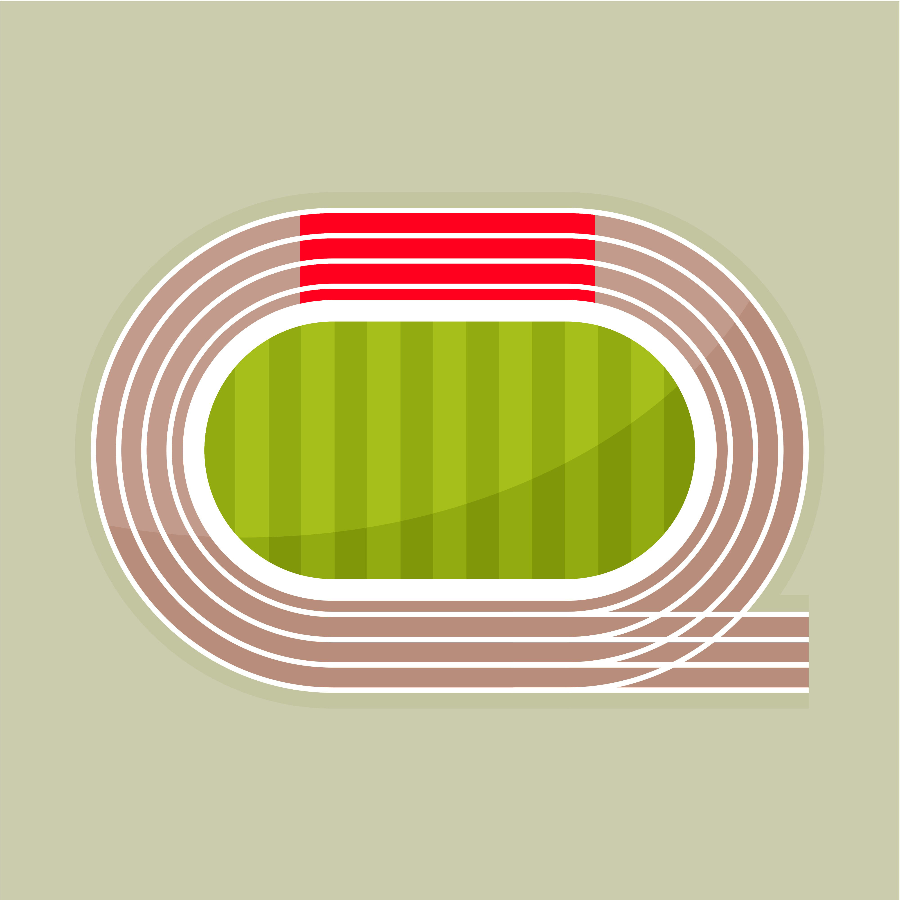
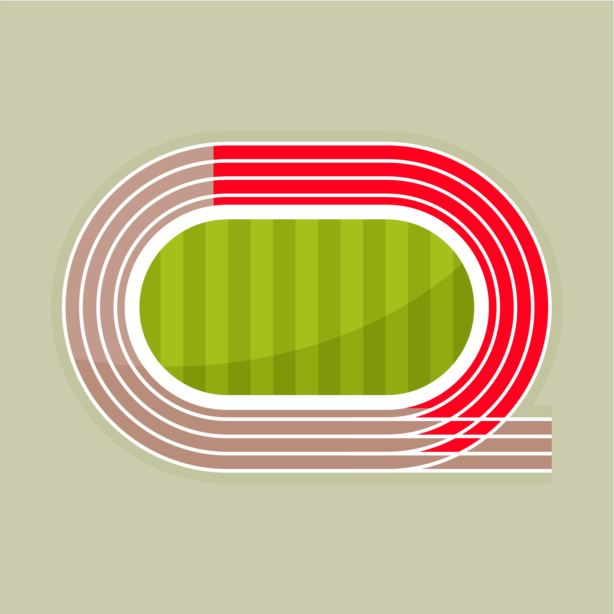
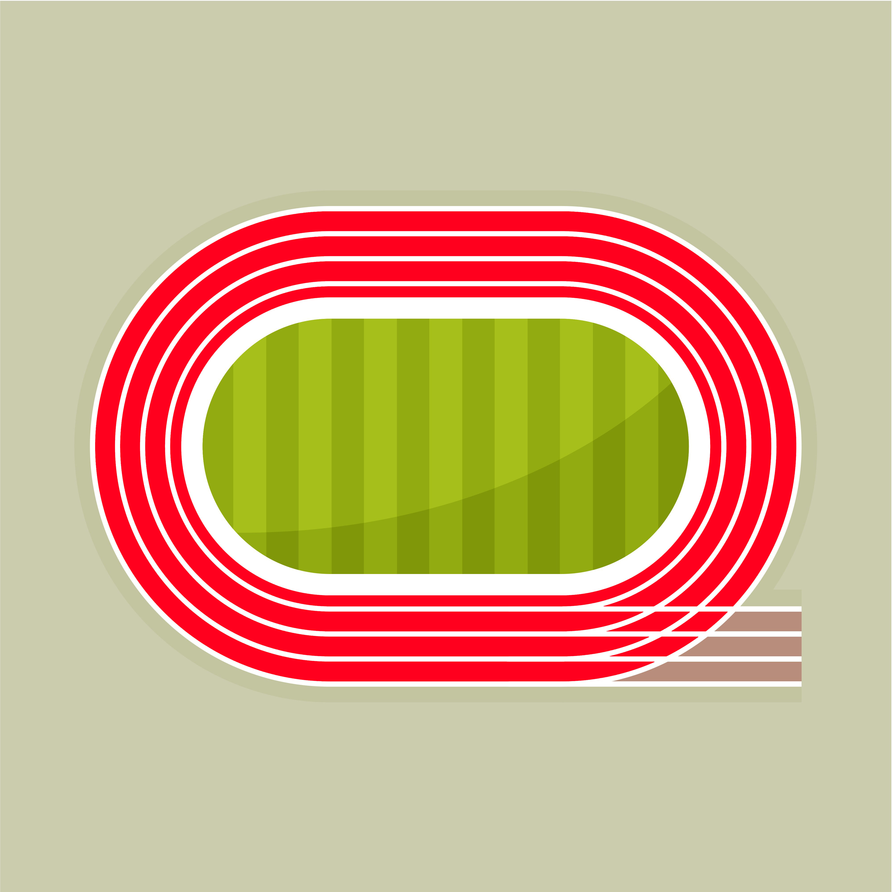

The 100 meter sprint is one of the most popular and prestigious events in track and field. It is considered the ultimate test of speed and power, with the winner being crowned the "fastest person in the world. Top sprinters in this even must cover 100 meters in under 10 seconds to be considered elite. It is typcially over one straight stretch of track.

The 200 meter sprint is a middle-distance running event that tests both speed and endurance. It is typically run on one curve and one straight section of the track. This sprint requires athletes to maintain their speed while navigating the turns.

The 400 meter sprint is a classic middle-distance running event that demands a perfect balance of speed and endurance. It is typically run on a curved track and requires athletes to overcome fatigue during their sprints.